Nakasendo Way
The Edo-period mountain road through Japan's cypress heart to Kyoto.
Nakasendo Way runs 530 km through Japan and finishes at Kyoto (Sanjō Ōhashi). It starts at Nihonbashi. Your ordinary week counts toward all of it: at 5,000 steps a day that's about 21 weeks, with no flights and no leave. Below are the 26 places you pass, each with its photograph and its story.
- 530km end to end
- 26landmarks
- 21 weeksat 5,000 steps a day
- Kyoto (Sanjō Ōhashi)finishes at

The landmarks of Nakasendo Way
26 landmarks, in walking order. Each photograph is by the person credited beneath it, used as they licensed it.
-
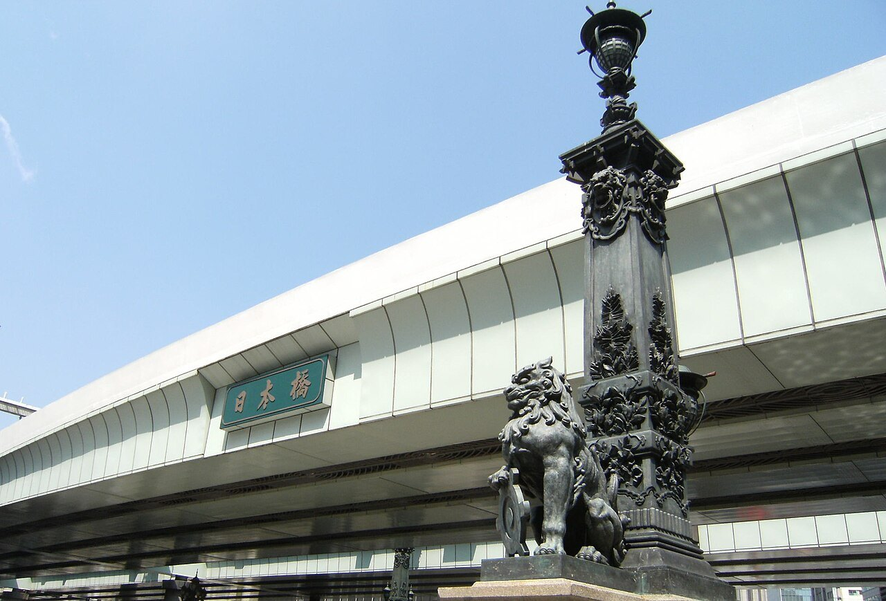
Photo: gorian21 · Wikimedia Commons (geo), CC BY 3.0 Nihonbashi
Here the whole country begins counting. This wooden bridge over Edo's canals is the zero-stone for five great highways, and the Nakasendō—the mountain road—strikes northwest toward Kyoto, 530 kilometres and 69 post stations distant. Merchants once haggled over fish at the riverside market nearby, the road's first travellers setting out inland, away from the sea.
-
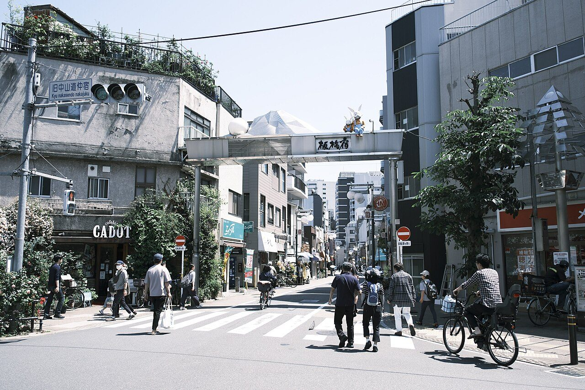
Photo: 響紫 · Wikimedia Commons, CC BY-SA 4.0 Itabashi-juku
Barely two hours from the bridge stands the first of the sixty-nine post towns. Itabashi took its name from a plank bridge over the Shakujii River. Farewell parties from Edo traditionally ended here, sake cups drained on the roadside, before travellers carried on alone into the wide plains of Musashi.
-
Kumagaya-juku
Flat rice country stretches wide here, the Kantō plain lying open under a huge sky. Kumagaya honoured the samurai Kumagai Naozane, whose grief after killing a young foe at Ichi-no-Tani turned him to the priesthood. The road runs straight for miles, the mountains still only a blue rumour on the horizon.
-
Takasaki-juku
One hundred kilometres in, Takasaki's castle town trades in silk cocoons and round-eyed daruma dolls. The Karasu River glints below the ramparts. Beyond the rooftops the land finally tilts—the Kantō plain surrenders to foothills, and the long climb for which the Nakasendō is feared begins at last to gather ahead.
-
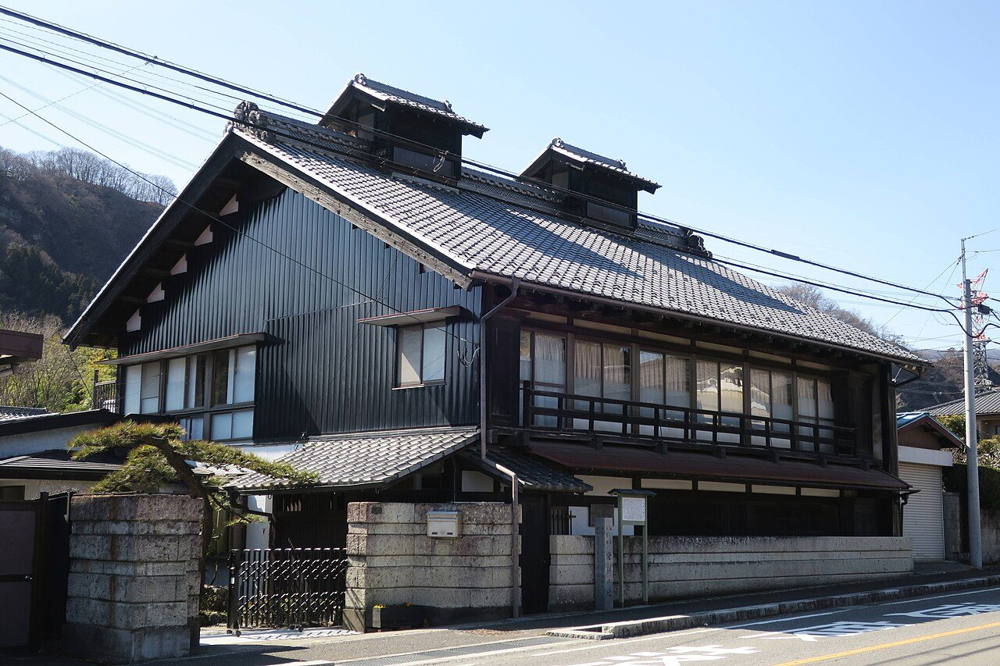
Photo: photo: Qurren (talk) Taken with Canon PowerShot G9 X · Wikimedia Commons, CC BY-SA 4.0 Sakamoto-juku
At the foot of the pass, Sakamoto crams its honjin and inns along one tight street. Travellers paused here to eat and rest before the ascent, and porters offered their backs for hire. The mountain wall of Usui rises directly ahead, its cedar forest dark and sheer, the hardest climb of the road waiting above.
-
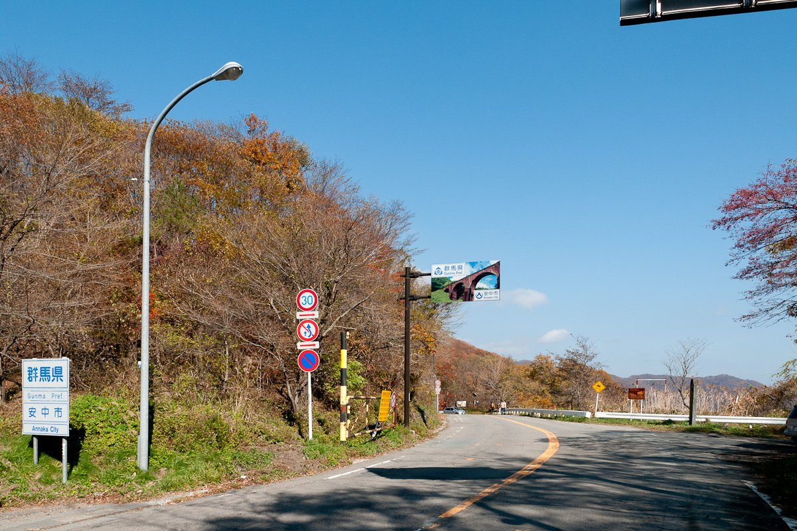
Photo: Rs1421 · Wikimedia Commons, CC BY-SA 3.0 Usui Pass
The stone path switchbacks upward through cedar and beech until Edo's plains disappear. Usui Pass, near 960 metres, marks the old border between Kōzuke and Shinano; the barrier gate where officials checked papers lay below at Yokokawa. Mist pools in the valleys. At the crest a teahouse still sells chikara-mochi—strength cakes—to those who made the grade.
-
Karuizawa-juku
Cool air settles over Karuizawa, a highland station above 900 metres where summer never quite takes hold. Larch woods and the smoking cone of Mount Asama frame the road. Once a plain post town for weary pass-crossers, its thin mountain air and quiet would, centuries later, draw missionaries and holidaymakers escaping the lowland heat.
-
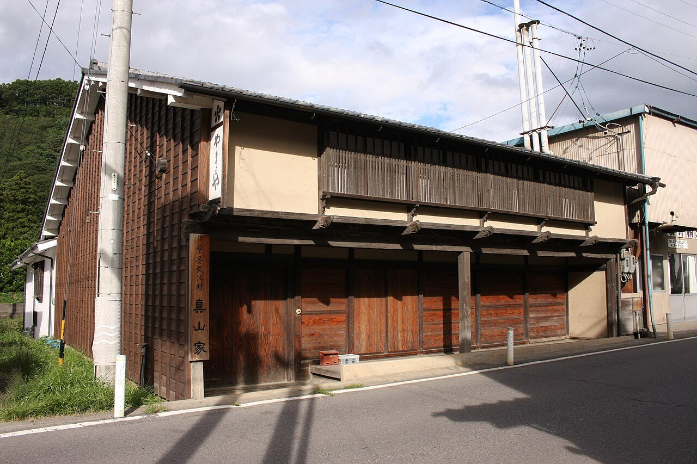
Photo: 小池 隆 · Wikimedia Commons, CC BY 3.0 Mochizuki-juku
The Saku basin opens gently, and Mochizuki—'full moon'—was famed for horses bred on these uplands and sent as tribute to the imperial court. Its old inns lean over a curving street barely changed in shape. A small river crosses the way; ahead the land heaves once more toward the highest pass on the entire road.
-
Wada Pass
Nothing else on the Nakasendō climbs this high. Wada Pass is the road's summit, above 1,500 metres, and winter buried travellers so often that relief huts were kept stocked along the route. The gap between Wada and Shimosuwa was the longest, loneliest stretch between any two stations, where snow lingers in the hollows long into spring.
-
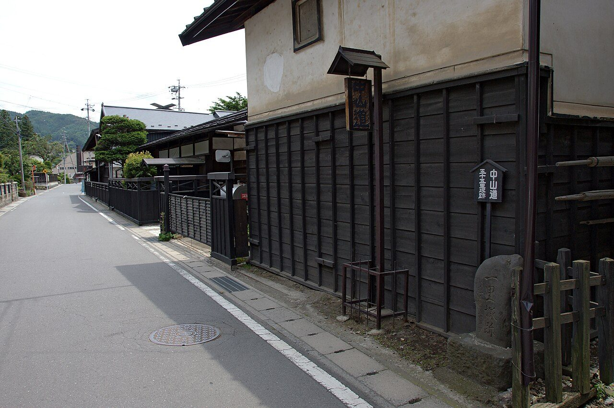
Photo: 663highland · Wikimedia Commons, CC BY 2.5 Shimosuwa-juku
Steam rises from Shimosuwa, the only post town on the road with its own hot springs—and the point where the Kōshū Kaidō from Edo rejoins the Nakasendō. Beside Lake Suwa the great Suwa Taisha shrine draws its pilgrims. Weary travellers soaked aching feet in its thermal water at the foot of the long descent from Wada.
-
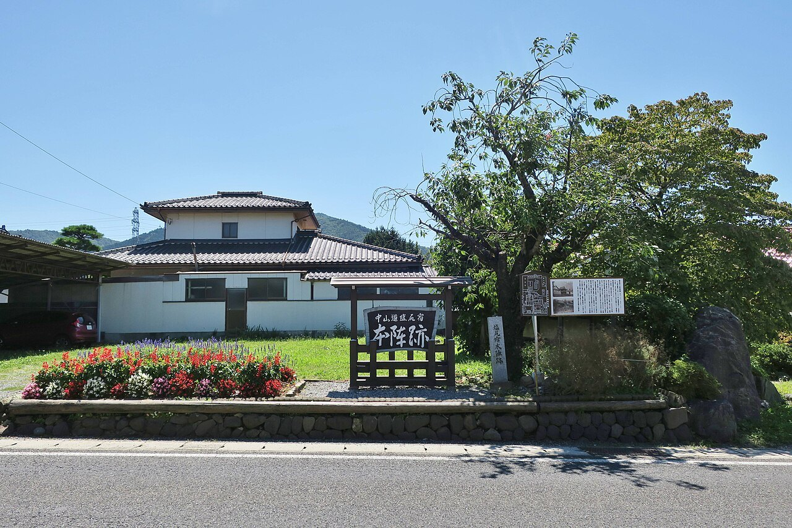
Photo: photo: Qurren (talk) Taken with Canon PowerShot G9 X · Wikimedia Commons, CC BY-SA 4.0 Shiojiri-juku
Shiojiri means 'salt's end', the inland point where salt carried up from two opposite coasts met and stopped. It was one of the larger stations, its wide street lined with honjin for daimyō processions. To the west the Kiso mountains stack in blue ranks, marking the valley that gives the whole road its soul.
-
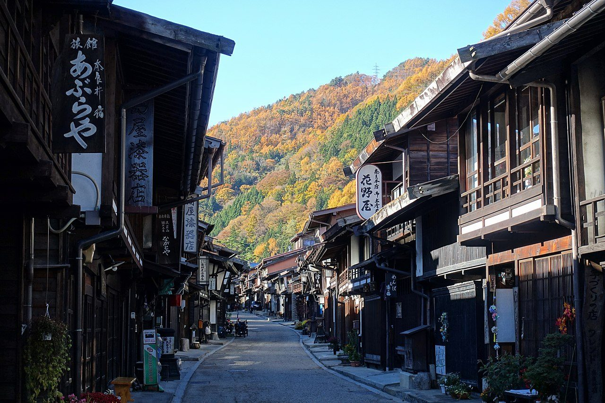
Photo: Luka Peternel · Wikimedia Commons, CC BY-SA 4.0 Narai-juku
Narai grew so prosperous it was called 'Narai of a thousand houses'. As the last station before the Torii Pass, travellers spent their money here rather than carry it over the mountain. A kilometre of dark-timbered inns and lattice fronts still lines the street, lacquerware glowing in shop windows lit against the Kiso gloom.
-
Torii Pass
The climb from Narai leads to Torii Pass, named for a shrine gate raised in thanks by a warlord who prayed to Mount Ontake here for victory. This is the watershed of the Kiso: waters on the northern side run inland, those to the south run to the Pacific. Ancient cypresses crowd the trail, and a small shrine keeps the summit.
-
Kiso-Fukushima-juku
Kiso-Fukushima guarded one of the four great barriers of Edo Japan, where officials scrutinised every traveller, hunting especially for 'outgoing women and incoming guns'. The Kiso River roars through a gorge below the checkpoint. Steep streets cling to the slope, and the road presses on past the guardhouse into the deepening valley.
-
Agematsu-juku
The gorge tightens at Agematsu, where the Kiso River carves the famous Nezame-no-Toko—the 'bed of awakening'—its pale granite scoured smooth. These forests grew the cypress reserved for shrines and castles, so prized that felling a single tree could cost a life. Log rafts once rode the current downstream, the road tracing the water south.
-
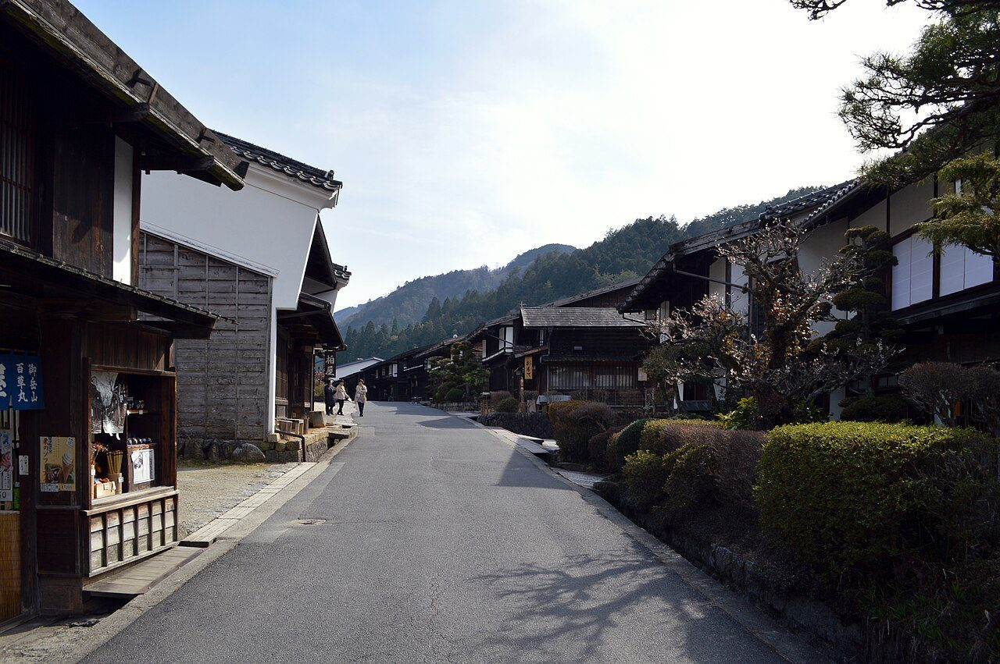
Photo: DimiTalen · Wikimedia Commons, CC0 Tsumago-juku
Tsumago halts time. When the railway bypassed the Kiso, the town was left to sleep—then rescued, its residents pledging never to sell, rent or destroy the old post-town houses. No wires cross the sky; wooden inns and a hilltop castle ruin stand as an Edo traveller would have seen them. Lanterns glow along the darkening street.
-
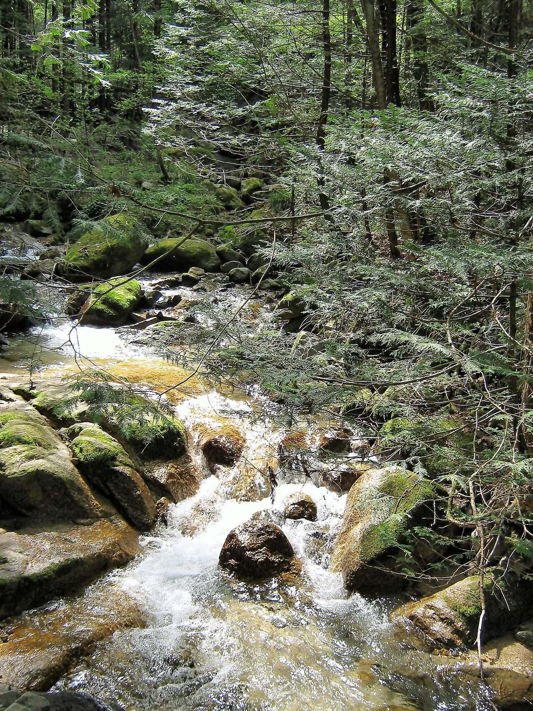
Photo: yeowatzup · Wikimedia Commons, CC BY 2.0 Magome Pass
Between Tsumago and Magome the old road survives whole: a stone-paved trail climbing through cedar and terraced rice to the 801-metre Magome Pass. Bear-bells ring at intervals along the way, a waterwheel turns, and a teahouse offers free tea to walkers. This eight-kilometre stretch is the most walked and best loved of the entire Nakasendō.
-
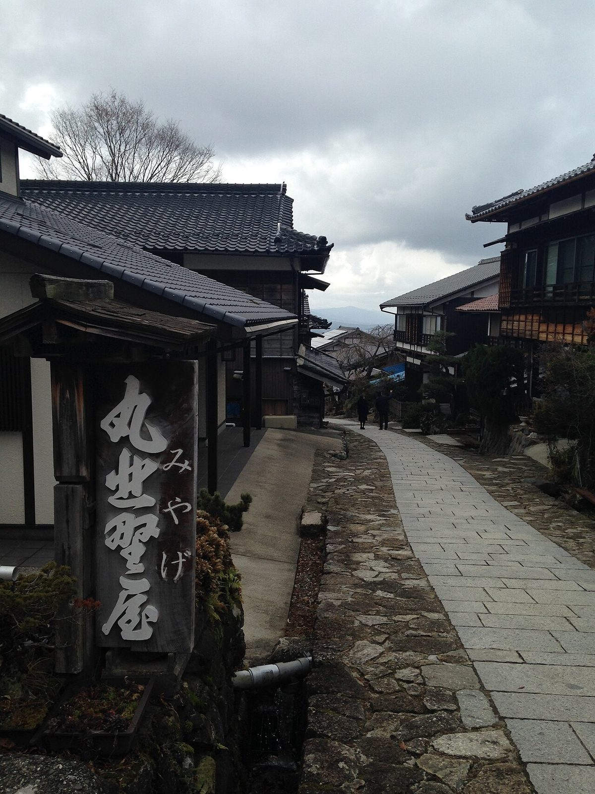
Photo: そらみみ · Wikimedia Commons, CC BY-SA 3.0 Magome-juku
Magome tips down a steep cobbled slope, its inns and water mills stacked along the incline. This was the birthplace of the novelist Shimazaki Tōson, whose 'Before the Dawn' told the story of these mountain post towns and their people. From the lookout the Mino plains and Mount Ena spread wide, the Kiso valley opening westward at last.
-
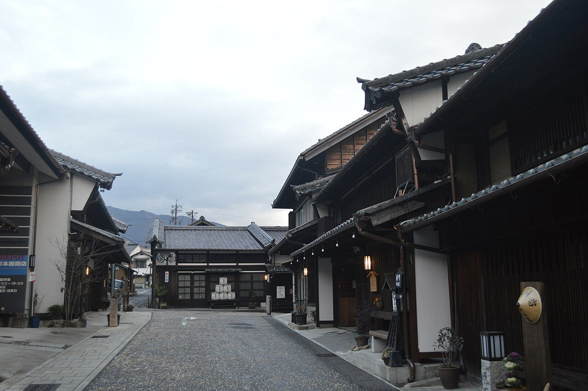
Photo: Asturio Cantabrio · Wikimedia Commons, CC BY-SA 4.0 Nakatsugawa-juku
Nakatsugawa spreads out where the mountains ease, a merchant town grown fat on Kiso timber and the traffic off the road. Its old quarter keeps storehouses and sweet-shops selling kuri-kinton, chestnut confection from the surrounding groves. Beyond the last of the high valley the going flattens toward the broad Nōbi plain and Gifu.
-
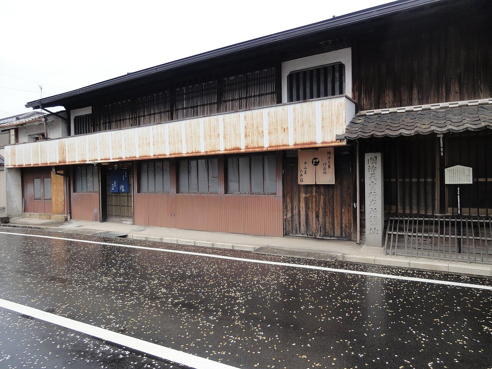
Photo: inunami · Wikimedia Commons, CC BY 2.0 Ōi-juku (Ena)
Ōi, now part of Ena, was the largest station along the Mino stretch, its five wards joined at right angles—masugata bends built to slow any hostile advance, and six of the sharp turns survive. Mount Ena stands snow-streaked to the north. The road runs on through paddy and mulberry, the Kiso mountains sinking behind into memory.
-
Ōta no Watashi
At Ōta the Kiso River had to be crossed, and there was no bridge—only a ferry, ranked among the most feared crossings on the road. Floods stranded whole daimyō processions here for days on end. Past the far bank the broad Nōbi plain opens out, Gifu's castle hill rising sharp against the western light.
-
Sekigahara
Sekigahara: on a foggy October morning in 1600, some 160,000 samurai clashed in the battle that decided Japan's next 250 years. Tokugawa Ieyasu's victory made him shōgun and set the Edo peace in which this very road flourished. Marker posts still name the warlords' camps across the quiet basin, walked now in silence.
-
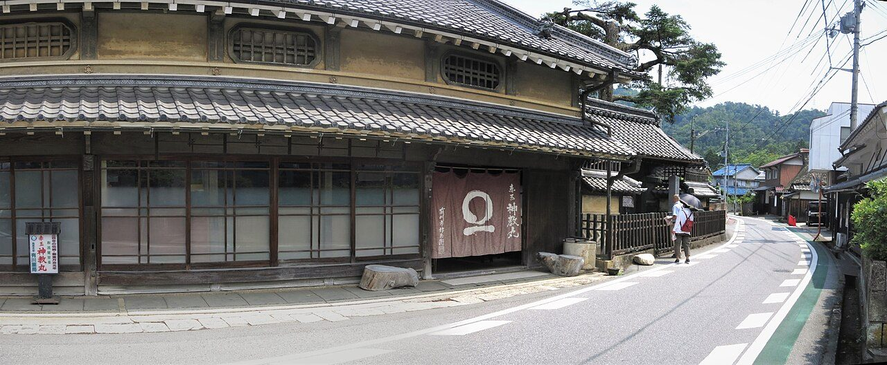
Photo: Gpwitteveen · Wikimedia Commons, CC BY-SA 4.0 Toriimoto-juku
Into Ōmi now, and Toriimoto was known for two things: the oil-paper rain capes made here and Akadama Shinkyōgan, a stomach remedy pressed on every passing traveller. The road skirts the hills toward Lake Biwa. The Ii clan's castle at Hikone rises nearby, and the great water of Biwa begins to glimmer ahead—Kyoto within two days' walk.
-
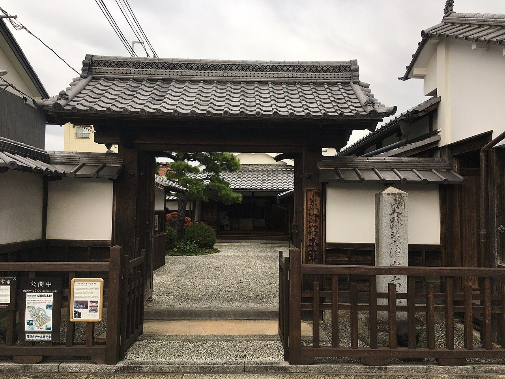
Photo: Higa4 · Wikimedia Commons, CC0 Kusatsu-juku
At Kusatsu the mountain road meets its coastal rival: here the Nakasendō and the Tōkaidō join and run as one into Kyoto. The old honjin survives complete, the grandest surviving inn on either highway, its guest ledgers still naming daimyō and princes. Two rivers of travellers merge, and the road is suddenly, cheerfully crowded.
-
Ōtsu-juku
Ōtsu, the last station, presses against the southern tip of Lake Biwa, busy with boats and the freight of the whole lake. Sixty-eight post towns lie behind it. The Ōsaka barrier—the 'meeting-hill'—waits just ahead, the low pass that parted lovers and travellers in a thousand old poems. Kyoto's rooftops are almost in reach.
-
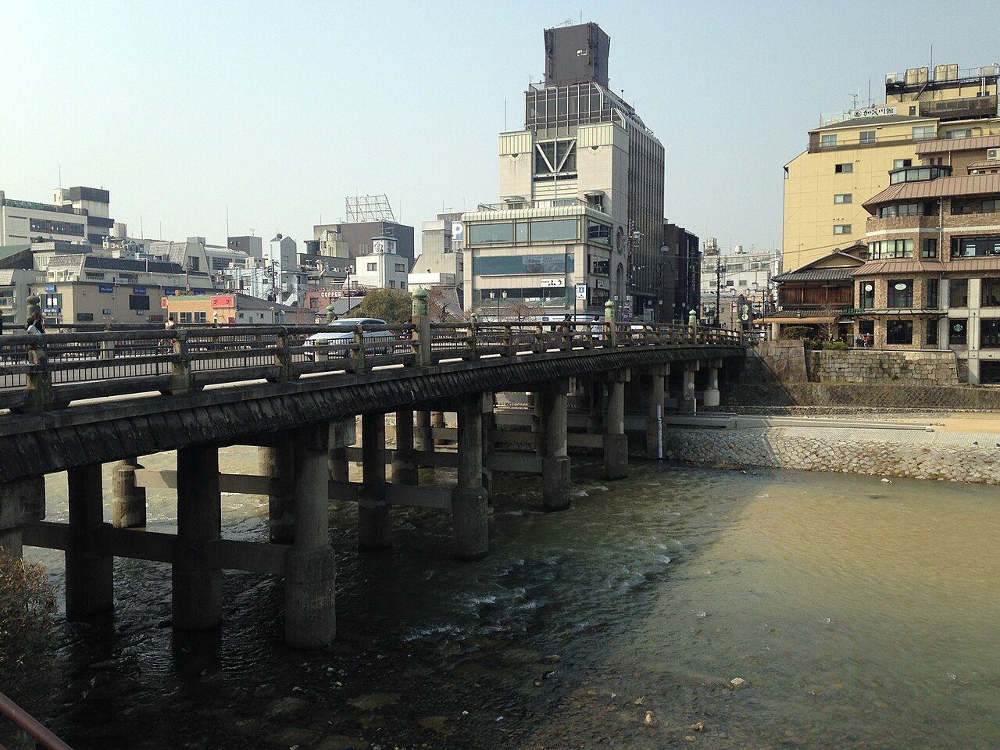
Photo: そらみみ · Wikimedia Commons, CC BY-SA 3.0 Sanjō Ōhashi
Sanjō Ōhashi. The bridge over the Kamo River is the road's end, mirroring Nihonbashi at its start, and arriving travellers touched its great posts as pilgrims touch a shrine. Behind it lie 530 kilometres, sixty-nine stations, two high passes and the whole mountain spine of Japan. Here the mountain road spills its footsore travellers into the old capital of Kyoto.
Walking the Nakasendo Way
Your watch is already counting these steps. Watch Walks spends them on the Nakasendo Way, all 530 km of it, and hands you each landmark as you reach it. There's no route recording, no account and no ads. The Inca Trail is free; this one is a one-time purchase with no subscription.
Other trails in Asia
- Shikoku Pilgrimage 1,200 km · Japan
- Annapurna Circuit 128 km · Nepal
- Jordan Trail 675 km · Jordan
- Lycian Way 540 km · Turkey
- Manaslu Circuit 177 km · Nepal
- Kumano Kodo 46 km · Japan